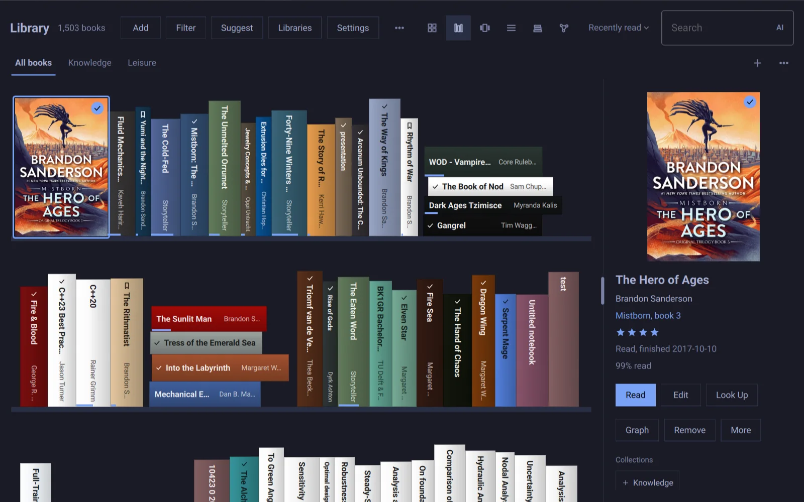
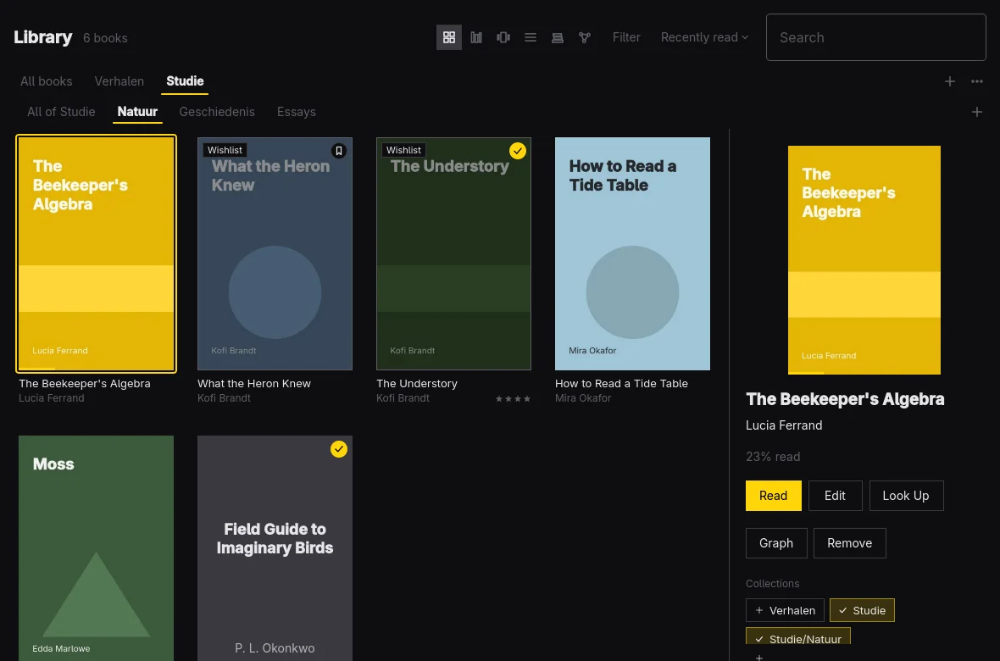

Documentation / The library
The library
A library is a folder. Keep several and switch with O.
Views
The library is one shelf looked at five ways. 1 to 5 pick one and V goes to the next: covers, spines, carousel, list and stacks. Each library remembers its own.

Order, filter, search
S changes the order and Shift+S turns it round. F filters by reading status, paper, digital or wishlist, format, language, tag, author, series or rating. / searches as you type with author:, title:, series:, tag:, format:, lang: and knows:.
A bare word also finds a book by the characters, places and ideas the knowledge graph met in it, but only as far as you have read.
Collections
A collection is a saved selection, not a place: a book can be in several and nothing is copied. They show as tabs above the shelf, nest inside one another, and are filled by a rule and by hand. C lists them. Each top-level collection is also a graph of its own, so the books you study and the books you read for fun never mix.

Reading
A line of text is as long as reads well, 66 characters by default. Where the window has room, it is an open book of two or three pages side by side. Shift+A sets the font, size, line, spacing, margins and alignment. T shows the contents beside the page and F shows the book and nothing else.
Annotate with colored highlights, margin notes (typed, dictated or handwritten) and ink in the margins and between the lines of any book.
Make it yours
Every key, color, view and panel is a file in ~/.config/omabook/, followed while the app runs. omabook customize prints the folder and writes a guide there.